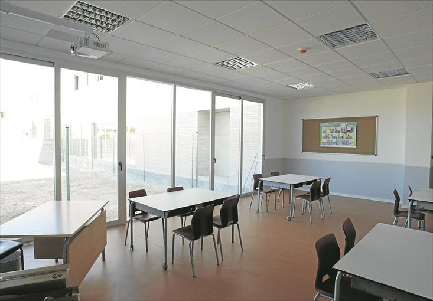
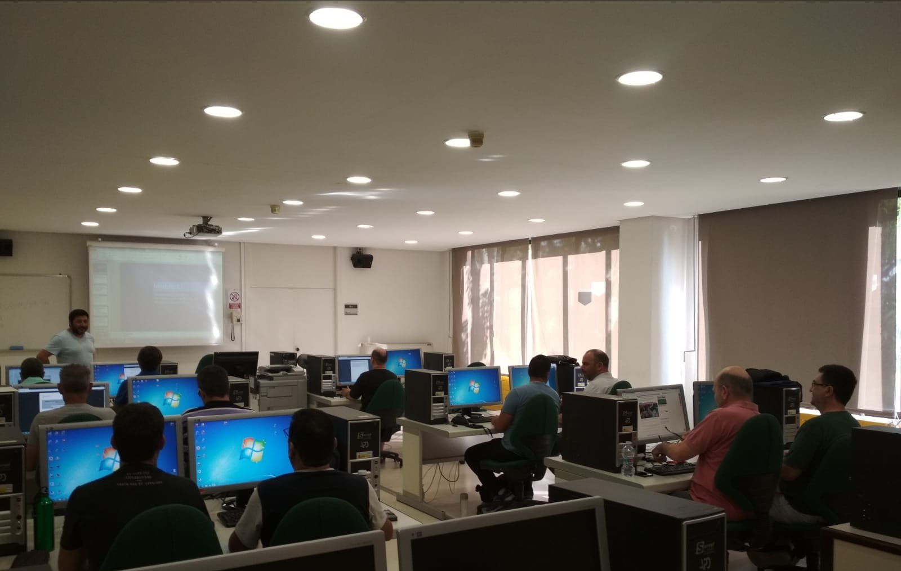

Técnico en Gestión Administrativa - GRADO MEDIO
Plan de formación
Los módulos profesionales de este ciclo formativo son los siguientes:
- Comunicación empresarial y atención al cliente.
- Operaciones administrativas de compra-venta.
- Empresa y Administración.
- Tratamiento informático de la información.
- Técnica contable.
- Operaciones administrativas de recursos humanos.
- Tratamiento de la documentación contable.
- Inglés.
- Empresa en el aula.
- Operaciones auxiliares de gestión de tesorería.
- Formación y orientación laboral.
- Formación en centros de trabajo.
Al finalizar mis estudios, ¿Qué puedo hacer?
Trabajar en:Empresas tanto públicas como privadas como:
- Auxiliar administrativo.
- Ayudante de oficina.
- Auxiliar administrativo de cobros y pagos
- Administrativo/a comercial.
- Auxiliar administrativo de gestión de personal
- Auxiliar administrativo de las administraciones públicas.
- Recepcionista.
- Empleado/a de atención al cliente.
- Empleado/a de tesorería.
- Empleado/a de medios de pago
¿Cuáles son las salidas profesionales?
Este profesional ejerce en cualquier sector de actividad, y particularmente en el sector servicios, así como en las administraciones públicas, ofreciendo apoyo administrativo en las tareas de administración y gestión de dichas empresas e instituciones y prestando atención a los clientes y ciudadanos.
Técnico Superior en Administración y Finanzas - GRADO SUPEIOR
Plan de formación
Los módulos profesionales de este ciclo formativo son los siguientes:
- Gestión de la documentación jurídica y empresarial.
- Recursos humanos y responsabilidad social corporativa.
- Ofimática y proceso de la información.
- Proceso integral de la actividad comercial.
- Comunicación y atención al cliente.
- Inglés.
- Gestión de recursos humanos.
- Gestión financiera.
- Contabilidad y fiscalidad.
- Gestión logística y comercial.
- Simulación empresarial.
- Proyecto de administración y finanzas
- Formación y orientación laboral
- Formación en centros de trabajo.
Al finalizar mis estudios, ¿Qué puedo hacer?
Trabajar como:
- Administrativo/a de oficina.
- Administrativo/a comercial.
- Administrativo/a financiero/a .
- Administrativo/a contable.
- Administrativo/a de logística.
- Administrativo/a de banca y de seguros.
- Administrativo/a de recursos humanos.
- Administrativo/a de la Administración pública.
- Administrativo/a de asesorías jurídicas, contables, laborales, fiscales o gestorías.
- Técnico/a en gestión de cobros.
- Responsable de atención al cliente
¿Cuáles son las salidas profesionales?
Este profesional ejerce su actividad en cualquier sector, y particularmente en el sector servicios, así como en las administraciones públicas, desempeñando las tareas administrativas en la gestión y el asesoramiento en las áreas laboral, comercial, contable y fiscal de dichas empresas e instituciones, ofreciendo un servicio y atención a los clientes y ciudadanos, realizando trámites administrativos con las administraciones públicas y gestionando el archivo y las comunicaciones de la empresa.
Técnico Superior en Asistencia a la Dirección - GRADO SUPERIOR
Plan de formación
Los módulos profesionales de este ciclo formativo son los siguientes:
- Gestión de la documentación jurídica y empresarial.
- Recursos humanos y responsabilidad social corporativa.
- Ofimática y proceso de la información.
- Proceso integral de la actividad comercial.
- Comunicación y atención al cliente.
- Inglés.
- Segunda lengua extranjera.
- Protocolo empresarial.
- Organización de eventos empresariales.
- Gestión avanzada de la información.
- Proyecto de asistencia a la dirección.
- Formación y orientación laboral.
- Formación en centros de trabajo.
Al finalizar mis estudios, ¿Qué puedo hacer?
Trabajar como:
- Asistente a la dirección.
- Asistente personal.
- Secretario/a de dirección.
- Asistente de despachos y oficinas.
- Asistente jurídico.
- Asistente en departamentos de Recursos Humanos.
- Administrativo/a en las Administraciones y Organismos Públicos.
¿Cuáles son las salidas profesionales?
Este profesional ejerce su actividad al lado de uno o más directivos/as, o ejecutivos/as, o bien de un equipo de trabajo. Tiene un papel básicamente interpersonal, organizacional y administrativo que puede desarrollarse en todo tipo de organizaciones que dan cabida a este tipo de profesional.
Imágenes de las clases

